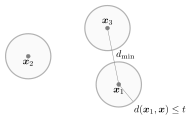

Lecture 7. Linear codes pdf
Introduction
The repetition code we studied in the previous lecture consisted of a single $k=1$ information bit $s\in\{0,1\}$ repeated $n$ times. For example, for $n=3$, we have the code $\{\x_1,\x_2\}=\{000,111\}$. Any of the two codewords $\x\in\{\x_1,\x_2\}$ is a sequence of three bits $\x=(x_1,x_2,x_3)$ that is generated from the information bit $s$ as $x_1=x_2=x_3=s$. Also, to check whether $\x$ is a codeword of the repetition code, we can use the equations $x_1+x_2=0$ and $x_2+x_3=0$ in modulo 2 arithmetic. Let us write the sequence of bits $\x$ as the $1\times 3$ row vector $\x=(x_1 ~ x_2 ~x_3)$. Then, we can express the two former procedures using matrices as $$ (x_1 ~x_2 ~x_3) = s\underbrace{\begin{pmatrix} 1 &1 &1 \end{pmatrix}}_{\boldsymbol{G}} \tag{7.1}$$ and $$ \underbrace{\begin{pmatrix} 1 &1 &0\\ 0 &1 &1 \end{pmatrix} }_{\boldsymbol{H}} \begin{pmatrix} x_1\\ x_2\\ x_3 \end{pmatrix} = \begin{pmatrix} 0\\ 0 \end{pmatrix}, \tag{7.2}$$ or more compactly as $\x=s\boldsymbol{G}$ and $\boldsymbol{H}\boldsymbol{x}^T = \boldsymbol{0}$ where $\boldsymbol{G}$ and $\boldsymbol{H}$ are the generator and parity-check matrices. The family of codes that follow this structure are called linear codes.
Linear codes
A linear code ${\cal C}=\{\x_1,\ldots,\x_M\}$ is a binary code of $M=2^k$ codewords each generated as $$ \x_m = \boldsymbol{s}_m \boldsymbol{G}, \tag{7.3} $$ where $\boldsymbol{s}_m$ is the $k$-binary representation of the integer number $m-1$ and $\boldsymbol{G}$ is a $k\times n$ generating matrix. For such code, there exists a $(n-k)\times n$ parity-check matrix $\boldsymbol{H}$ such that, for every $m\in\{1,\ldots,M\}$, $$ \boldsymbol{Hx}_m^T=\boldsymbol{0}. \tag{7.4}$$ The dimensions of the code are $(n,k)$, so for example the repetition code above is a $(3,1)$ linear code.
Example 7.1. Consider the linear code generated by $$ \boldsymbol{G} = \begin{pmatrix} 0 & 1 & 0\\ 1 & 0 & 1 \end{pmatrix}. $$ Since $\boldsymbol{G}$ has dimensions $2\times 3$, that is $2$ rows and $3$ columns, we have a linear code with $k=2$ and $n=3$, or a $(3,2)$ linear code. The code will consist of $M=2^k=2^2=4$ codewords and the rate of the code is $R=\frac kn = \frac 23$. The four messages can be represented using the following binary streams of length $k=2$: $\boldsymbol{s}_1=00$, $\boldsymbol{s}_2=01$, $\boldsymbol{s}_3=10$ and $\boldsymbol{s}_4=11$. Using $(7.3)$ we obtain the codewords $$\begin{gather} \x_1 = \boldsymbol{s}_1\boldsymbol{G} = \begin{pmatrix} 0 & 0 \end{pmatrix} \begin{pmatrix} 0 & 1 & 0\\ 1 & 0 & 1 \end{pmatrix} = \begin{pmatrix} 0 & 0 & 0 \end{pmatrix} \tag{7.5}\\ \x_2 = \boldsymbol{s}_2\boldsymbol{G} = \begin{pmatrix} 0 & 1 \end{pmatrix} \begin{pmatrix} 0 & 1 & 0\\ 1 & 0 & 1 \end{pmatrix} = \begin{pmatrix} 1 & 0 & 1 \end{pmatrix} \tag{7.6}\\ \x_3 = \boldsymbol{s}_3\boldsymbol{G} = \begin{pmatrix} 1 & 0 \end{pmatrix} \begin{pmatrix} 0 & 1 & 0\\ 1 & 0 & 1 \end{pmatrix} = \begin{pmatrix} 0 & 1 & 0 \end{pmatrix} \tag{7.7}\\ \x_4 = \boldsymbol{s}_4\boldsymbol{G} = \begin{pmatrix} 1 & 1 \end{pmatrix} \begin{pmatrix} 0 & 1 & 0\\ 1 & 0 & 1 \end{pmatrix} = \begin{pmatrix} 1 & 1 & 1 \end{pmatrix}. \tag{7.8}\end{gather}$$ The generated code is $\{000,101,010,111\}$.
The code in Example 7.1 is an example of a systematic code because the binary representation of the messages is a part of the codeword, that is, every codeword can be written as $\x_m = (\boldsymbol{p}_m ~\boldsymbol{s}_m)$, where $\boldsymbol{p}_m\in\{0,1\}^{n-k}$ is called the parity vector. This implies that $ \boldsymbol{G} = (\boldsymbol{P} \boldsymbol{I})$ where $\boldsymbol{P}\in\{0,1\}^{k\times (n-k)}$ is the parity matrix.
As we shall see later, the performance of a linear code, when used over a bit-flipping channel, is related to the minimum distance among all codewords in the code. To define the minimum distance we need a couple of definitions. The Hamming weight of a binary sequence $\x$ is just the number of ones in the sequence, that is, $$ w(\x) = \sum_{i=1}^n x_i \tag{7.9}$$ where the sum is the regular sum, not binary. For example $w(111)=3$ or $w(000010)=1$. The Hamming distance between any two binary sequences $\x$ and $\y$ is just the number of positions in which the sequences differ, that is $$ d(\x,\y) = w(\x\oplus\y) \tag{7.10}$$ where again the sum is the regular sum, not binary. For example $d(101,010)=3$ or $d(00,01)=1$. Finally, the minimum Hamming distance of a code is defined as the minimum distance between any pair of distinct codewords in the code, mathematically speaking $$ d_{\rm min} = \min_{\substack{\x,\x'\in{\cal C}\\\x'\neq\x}} d(\x,\x'). \tag{7.11}$$
Problem 7.2. Find the minimum Hamming distance $d_{\rm min}$ of the linear code in Example 7.1.
Show solution
Since our code $\{000,101,010,111\}$ has $M=4$ codewords, there are $6$ possible distances between distinct codewords (note that the Hamming distance is symmetric!), that is: $$\begin{gather} d_{12} = d(\x_1,\x_2) = d(000,101)=2 \tag{7.12}\\ d_{13} = d(\x_1,\x_3) = d(000,010)=1 \tag{7.13}\\ d_{14} = d(\x_1,\x_4) = d(000,111)=3 \tag{7.14}\\ d_{23} = d(\x_2,\x_3) = d(101,010)=3 \tag{7.15}\\ d_{24} = d(\x_2,\x_4) = d(101,111)=1 \tag{7.16}\\ d_{34} = d(\x_3,\x_4) = d(010,111)=2. \tag{7.17}\end{gather}$$ Hence, $d_{\rm min} = \min\{2,1,3,3,1,2\} = 1$. The minimum Hamming distance of this code is $d_{\rm min}=1$.
When the number of codewords $M$ increases, calculating all the possible Hamming distances becomes cumbersome. However, for linear codes, it turns out that the sum of any two codewords is a codeword, implying that the minimum Hamming distance of a linear code can be calculated as $$ d_{\rm min} = \min_{\substack{\x\in{\cal C}\\\x\neq\boldsymbol{0}}} w(\x), \tag{7.18} $$ that is, the minimum Hamming weight among all non-zero codewords.
Example 7.3. In Problem 7.2, we have $3$ non-zero codewords, $\x_2$, $\x_3$ and $\x_4$ with respective Hamming weights $w(\x_2)=w(101)=2$, $w(\x_3)=w(010)=1$ and $w(\x_4)=w(111)=3$. Therefore, using $(7.18)$, we obtain that $d_{\rm min}=\min\{2,1,3\}=1$. Easier than calculating all possible distances.
The question is now how to design linear codes that have nice dimensions and good minimum distance. The repetition code $\{000,111\}$ has a minimum distance of $d_{\rm min}=3$, but a rate of $R=\frac 13$, that is, $66.67\%$ of the transmitted sequence $\x$ is redundancy and only a $33.33\%$ carries information. On the other hand, the code in Example 7.1 has a higher rate of $R=\frac 23$, but a lower minimum distance of $d_{\rm min}=1$. A code that offers a good tradeoff between rate and minimum distance is the $(7,4)$ Hamming code.
The (7,4) Hamming Code
The $(7,4)$ Hamming code is a code of length $n=7$ and dimension $k=4$, i.e., with $ M=2^k=16$ codewords and therefore rate $R=\frac47$. The generator and parity-check matrices are given by $$ \boldsymbol{G}=\begin{pmatrix} 1 & 1 & 0 & 1 & 0 & 0 & 0\\ 0 & 1 & 1 & 0 & 1 & 0 & 0\\ 1 & 1 & 1 & 0 & 0 & 1 & 0\\ \undermat{\boldsymbol{P}}{1 & 0 & 1} &\undermat{\boldsymbol{I}_{k\times k}}{ 0 & 0 & 0 & 1} \end{pmatrix} \tag{7.19}$$ and $$ \boldsymbol{H}=\begin{pmatrix} 1 & 0 & 0 & 1 & 0 & 1 & 1\\ 0 & 1 & 0 & 1 & 1 & 1 & 0\\ \undermat{\boldsymbol{I}_{(n-k)\times (n- k)}}{0 & 0 & 1} & \undermat{\boldsymbol{P}^T}{0 & 1 & 1 & 1} \end{pmatrix}, \tag{7.20}$$ respectively. The 16 codewords of the Hamming code, each generated according to $(7.3)$, are listed in Table 7.1.
| $m$ | $\boldsymbol{s}_m$ | $\x_m$ | $m$ | $\boldsymbol{s}_m$ | $\x_m$ |
|---|---|---|---|---|---|
| 1 | 0000 | 0000000 | 9 | 1000 | 1101000 |
| 2 | 0001 | 1010001 | 10 | 1001 | 0111001 |
| 3 | 0010 | 1110010 | 11 | 1010 | 0011010 |
| 4 | 0011 | 0100011 | 12 | 1011 | 1001011 |
| 5 | 0100 | 0110100 | 13 | 1100 | 1011100 |
| 6 | 0101 | 1100101 | 14 | 1101 | 0001101 |
| 7 | 0110 | 1000110 | 15 | 1110 | 0101110 |
| 8 | 0111 | 0010111 | 16 | 1111 | 1111111 |
Since the Hamming code is linear, we can use $(7.18)$ to find its minimum distance. By inspecting the table, we find that $ d_{\rm min} = 3.$ In other words, the (7,4) Hamming code is a subset of all possible $2^n=128$ sequences of $n=7$ bits such that two bit flips in any codeword cannot be confused by another codeword. This statement becomes clearer when studying the last performance metric of a code: the error probability.
Bounds on Codes
The minimum distance of a $(n,k)$ linear code can be used to estimate the error probability $P_{\rm e}$ when transmitted equiprobably over a binary symmetric channel with bit flipping probability $p$; the so-called union bound $$ P_{\rm e} \leq \sum_{w=d_{\rm min}}^n A_w \sum_{t=\lceil\frac w2\rceil}^w \binom wt p^t (1-p)^{w-t}, \tag{7.21} $$ where $A_w$ is the weight distribution of the code; the number of codewords with Hamming weight $w$.
Example 7.4. From Table 7.1, we observe that $A_0=1$ since there is one codeword with Hamming weight $w=0$, $A_1=0$ because there are no codewords with Hamming weight $w=1$, similarly $A_2=0$, $A_3=A_4=7$ since there are $7$ codewords of weight $w=3$ and $7$ codewords of weight $w=4$, and finally $A_5=A_6=0$ and $A_7=1$. The weight distribution of the (7,4) Hamming code is then $\{A_0,A_3,A_4,A_7\}=\{1,7,7,1\}$. The sum $\sum_{w=0}^n A_w = A_0 + A_3 + A_4 + A_7$ is of course $M$.
Problem 7.5. Calculate the union bound to the error probability of the linear code in Example 7.1 used over a binary symmetric channel with bit flipping probability $p$.
Show solution
To calculate the union bound in $(7.21)$, we need to determine the minimum distance and the weight distribution of the code. In Problem 7.2 we found that $d_{\rm min}=1$ and from the code itself $\{000,101,010,111\}$ we obtain that $\{A_0,A_1,A_2,A_3\}=\{1,1,1,1\}$. The outer sum in $(7.21)$ is for $w\in\{1,2,3\}$. When $w=1$, we have $A_w=1$ and $\lceil \frac w2 \rceil = 1 $, hence $$ A_w \sum_{t=\lceil\frac w2\rceil}^w \binom wt p^t (1-p)^{w-t} = 1 \cdot \sum_{t=1}^1 \binom 1t p^t (1-p)^{1-t} = p. \tag{7.22}$$ Similarly, for $w=2$ we have $$ A_w \sum_{t=\lceil\frac w2\rceil}^w \binom wt p^t (1-p)^{w-t} = 1 \cdot \sum_{t=1}^2 \binom 2t p^t (1-p)^{2-t} = 2p(1-p) + p^2, \tag{7.23}$$ while for $w=3$ $$ A_w \sum_{t=\lceil\frac w2\rceil}^w \binom wt p^t (1-p)^{w-t} = 1 \cdot \sum_{t=2}^3 \binom 3t p^t (1-p)^{3-t} = 3p^2(1-p) + p^3. \tag{7.24}$$ Combining everything, we obtain $$ P_{\rm e} \leq p + 2p(1-p)+p^2+3p^2(1-p)+p^3 = -2 p^3+2 p^2+3 p. \tag{7.25}$$
We end this lecture by stating the error-correcting capability of any $(n,k)$ code, not necessarily linear, with minimum Hamming distance $d_{\rm min}$. To do so, we define the Hamming sphere centered at $\x\in\{0,1\}^n$ of radius $r$ as the set of binary sequences of length $n$ at Hamming distance smaller or equal to $r$, that is $$ S(\x,r) = \big\{ \x'\in\{0,1\}^n~|~ d(\x,\x')\leq r \big\}. \tag{7.26}$$ Given $d_{\rm min}$, we can draw Hamming spheres of radius $t$ centered at the codewords as in Figure 7.1. In order for a codeword not to be confused by another one after $t$ bit flips, the spheres need not to overlap. That is, we need $d_{\rm min}> 2t$, or equivalently that $t<\frac{d_{\rm min}}{2}$. Since $d_{\rm min}$ can be odd or even, the largest value of $t$ can be written as $$ t = \Big\lfloor \frac{d_{\rm min}-1}{2}\Big\rfloor. \tag{7.27} $$ The value in $(7.27)$ is the number of bit flips that an error-correcting code can correct. Observe that if $t=\frac{d_{\rm min}}{2}$ were an integer, spheres would overlap at (at least) one output sequence and the decoder would not know which codeword generated that output sequence.

Example 7.6. The (7,4) Hamming code is able to correct up to $t=1$ bit flips for any transmitted codeword. Hence, there will be a decoding error if the channel introduces more than $t=1$ bit flips. As a result, for $m=1$, we have that ${\cal D}_1=\{0000000,1000000,0100000, 0010000,0001000,0000100,0000010,0000001 \}$ and after some maths, that $P_{\rm e}(1)=1 - P_{\rm d}(1) = 1 - (1-p)^7 - 7p(1-p)^6$. We will actually obtain the same result for all the codewords, concluding that the error probability of the (7,4) Hamming code is $P_{\rm e}=1 - (1-p)^7 - 7p(1-p)^6$.
We have seen that for a $t$-error correcting code ${\cal C}$, if we draw spheres of radius $t$, the spheres cannot overlap. What is the maximum number of codewords $M=2^k$ that ${\cal C}$ can have? This is the so-called sphere-packing problem, an important problem in information theory and coding that is beyond the scope of this course.